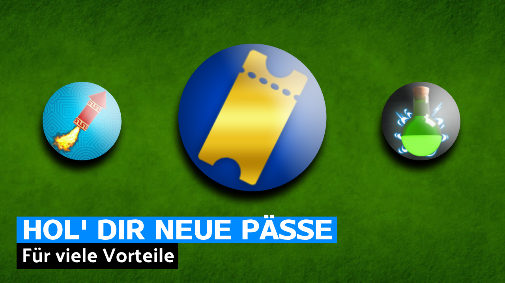

Veröffentlicht am: 28. August 2024
Diese Spielepässe sind ein hilfreicher Teil und machen dich zum Held, hier siehst du einige Pässe und was sie bieten.
Halte ein Auge hier offen und schau wieder vorbei, sobald mehr Pässe hier sind.
Mehr Pässe werden immer wieder kommen, die bald vorhandene Pass-Sektion wird dir dabei helfen, die zu finden, die du am meisten brauchst.